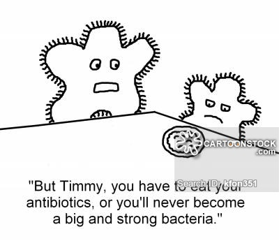

Table 1: List of Bacteria with their strain types and causing disease.
| Name of Bacteria | Strain Types | Cauing Disease |
|---|---|---|
| Mycobacterium Tetani | Gram positive | Tetanus |
| Escherichia Coli | Gram Negative | Travellas Diarrhoea |
| Clostridium botulinum | Gram Negative | Food poisoining |
| Vibrio Cholare | Gram Negative | Cholera |
| Mycobacterium Tuberculosis | Gram positive | Tuberculosis |
Antibiotics are medicines used to prevent and treat bacterial infections. Antibiotic resistance occurs when bacteria change in response to the use of these medicines. Bacteria, not humans or animals, become antibiotic-resistant
